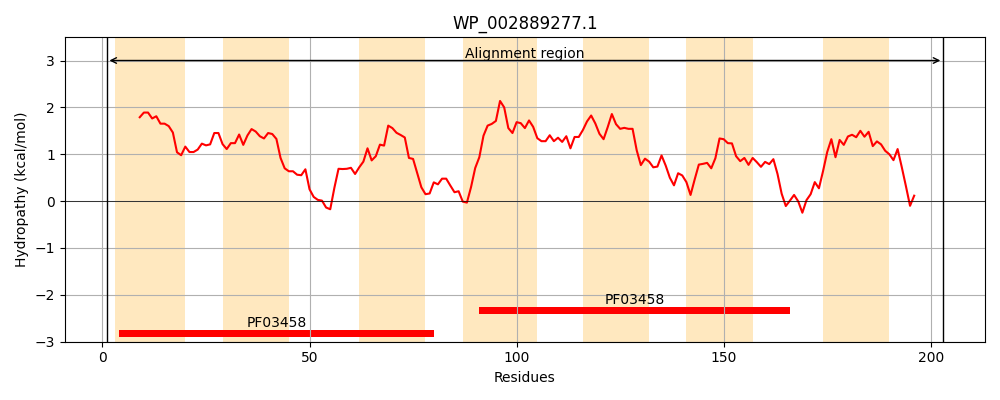
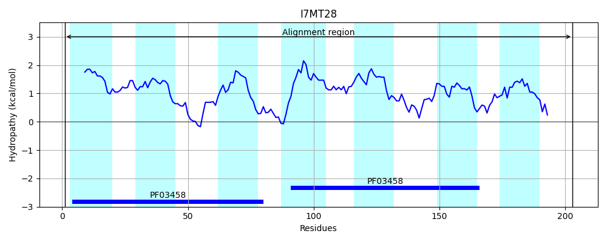
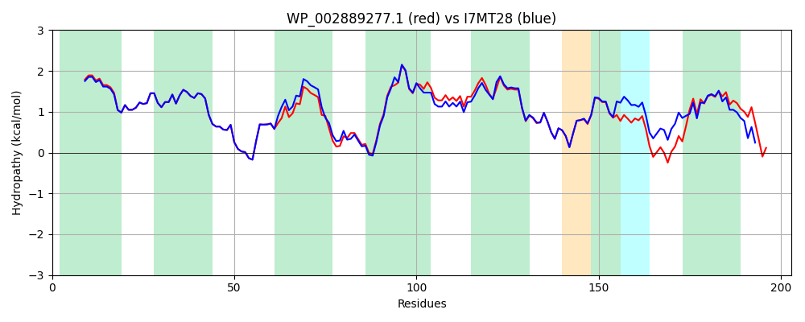

Hit Accession: I7MT28
Hit TCID: 1.A.62.2.2
Hit Description: gnl|BL_ORD_ID|5425 gnl|TC-DB|I7MT28|1.A.62.2.2 Uncharacterized protein OS=Yersinia pestis PY-02 GN=YPPY02_3851 PE=4 SV=1
Mach Len: 203
e:0.000000
Query TMS Count : 7
Hit TMS Count: 7
TMS-Overlap Score: 5.700000
Predicted Substrates:CHEBI:6528;long-chain fatty acid
BLAST Alignment:
Score: 904 , Bit scores: 352 bits, E-value: 1.0e-125, Alignment length: 203, Percentage identity: 86
Query: 1 MLVYWLDIIGTAVFAISGVLLAGKLRMDPFGVLVLGVVTAVGGGTIRDMALANGPVFWVKDPTDLVVAMVTSMLTILLVRQPRRLPKWILPVLDAVGLAVFVGIGVNKAFLAGSGPLVAVCMGVVTGVGGGIIRDVLAREIPMILRTEIYATACIVGGIVHATAHDTFHLPLENSAMMGMVVTLVIRLAAIRWHLKLPTFALD 203
MLVYWLDI+GTAVFAISGVLLAGKLRMDPFGVLVLGVVTAVGGGTIRDMALANGPVFWVKDPTDLVVAMVT + TI+LVRQPRR KWILPVLDA+GLAVFVGIGVNKAF A + PLVA+CMGV+TGVGGGIIRDVLAREIPMILRTEIYATACI+GGIVHATA TF++PL+ + M+GMV+TL IRLAAIRWHLKLPTF ++
Sbjct: 1 MLVYWLDILGTAVFAISGVLLAGKLRMDPFGVLVLGVVTAVGGGTIRDMALANGPVFWVKDPTDLVVAMVTCLATIVLVRQPRRTAKWILPVLDAIGLAVFVGIGVNKAFAADASPLVAICMGVITGVGGGIIRDVLAREIPMILRTEIYATACIIGGIVHATAFYTFNMPLQQAMMLGMVITLGIRLAAIRWHLKLPTFEIE 203 | Protein Hydropathy Plots: |
|---|
|  |  |
Pairwise Alignment-Hydropathy Plot:
|
|---|
|  |